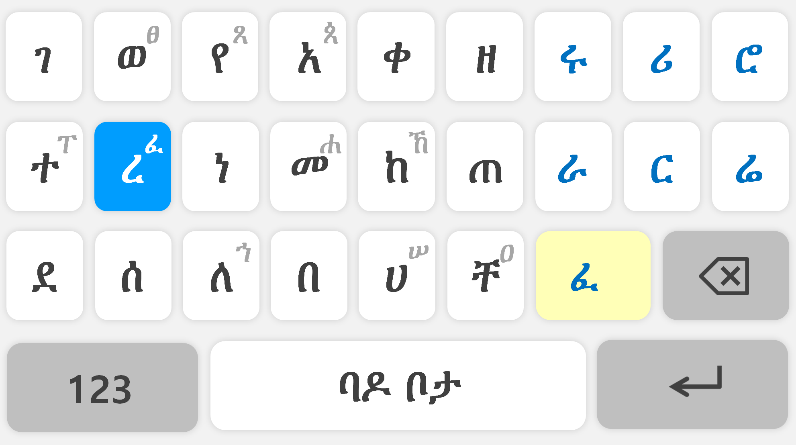

ቀላል እና ተስማሚ
የአማርኛ ዊንዶው
አሁን በስልክም በኮምፒዩተርም አንድ ኪቦርድ!
አሁን በስልክም በኮምፒዩተርም አንድ ኪቦርድ!

ተራናማ በስክሪኑ ላይ የሚታይ ትንሽ የቁልፍ ሰሌዳ ካርታ አለው። ፕሮግራሙን በመጫን ብቻ ባለው ኪቦርድ መጠቀም መጀመር ይቻላል። ጥቂት ቁልፎችን ብቻ ስለሚያስታውሱ፣ ለጥቂት ቀናት ካርታውን እያዩ ቢለማመዱ፣ ሳይመለከቱ መጻፍ ይችላሉ።